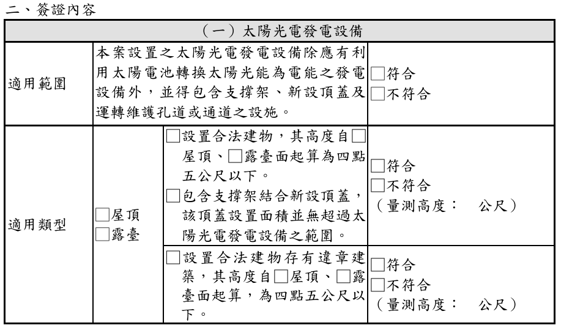
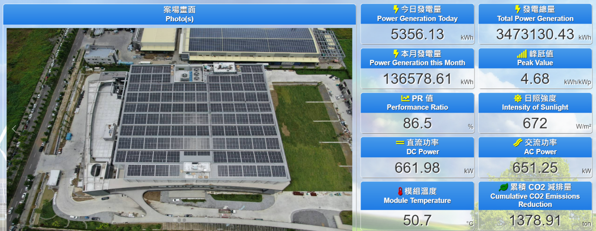

解構業務第一線回報 5 點情報：① 直面高層雙軌收斂、② D棟退縮2米免欄杆浪板方案、③ 出租中途回購甜蜜點、④ C棟露台17.6kW主動勸退、⑤ 進能服簡介壓軸預備。
完整呈現 D 棟主屋頂與 C1/C2 屋突（151.75kW）施作範圍、出租 vs 自建對照、建坤能源 SPV、20年逐年回購表、免雜30%法規檢討、CSI 445W 模組與亞力/華為逆變器。
正面回答資深顧問 5 大疑問（比較基準拉齊 NPV/IRR、3.5h PVsyst 與 0.8% 衰減率、回購溢價與外併轉自用、免雜法規、租約空間條款）與業主高層 5 大採購拍板題目。
首家 IPO 上櫃 EPC（資本額 5.88 億）、全台 750 MW / 348 座實績、南科 24 MW 科技大廠（年省 1.35 億）與芳生螺絲 3.66 MW 減碳實證、德國萊因 TÜV AAA 頂級維運。


2,668.23 m² － 1,035片模組面積 2,067.93 m² ＝ 通道 600.3 m²；600.3 ÷ 2,067.93 = 29.03% ≤ 30%，完美過關！



• M1–M2：台電併審文件準備與掛件申請
• M3：取得經濟部能源署「同意備案」核准函
• 鎖定饋線容量與高壓內併／外併點位
• M4：台中建管處免請領雜項執照簽證報備
• M4–M5：台電細部協商與外線線補確認
• 結構技師完成 17 級抗風壓結構計算簽證
• M6–M7：D 棟浪板鋪設（約 2 個月，方案二適用）
• M8–M10：光電進場施工（棚架植筋、模組與變流器安裝，工期約 3–4 個月）至台電併聯
• M11：取得台電併聯函，正式發電享節電效益
• M12：完納 $1,000/kW 模組回收費並完成設備登記
• M13+：綠能憑證 (T-REC) 申請與核發（自建適用）


【雲端專管平台即時追蹤】
1. 台電與建管申請進度透明化
2. 施工工項日程安排與進度追蹤
3. 核准公文與技師簽證圖面雲端永久備存
【智能監控管理平台】
1. 全天候監管案場狀況與發電數據
2. 發電日／週／月報表自動生成查詢
3. 組串電流異常與跳機自動即時告警
【預防性維護與定檢】
1. 專責工程師負責維護案場
2. 定期電氣巡檢與紅外線熱顯像掃描
3. 定期模組清水清洗，維持最高 PR 值
★【台灣最高 AAA 等級肯定】
• 德國萊因 TÜV 獨立第三方最高認證
• 全台綿密維運據點（中部駐點直達西屯）
• 合約保證：2 工作天內現場查檢、5 工作天內案場修復！

